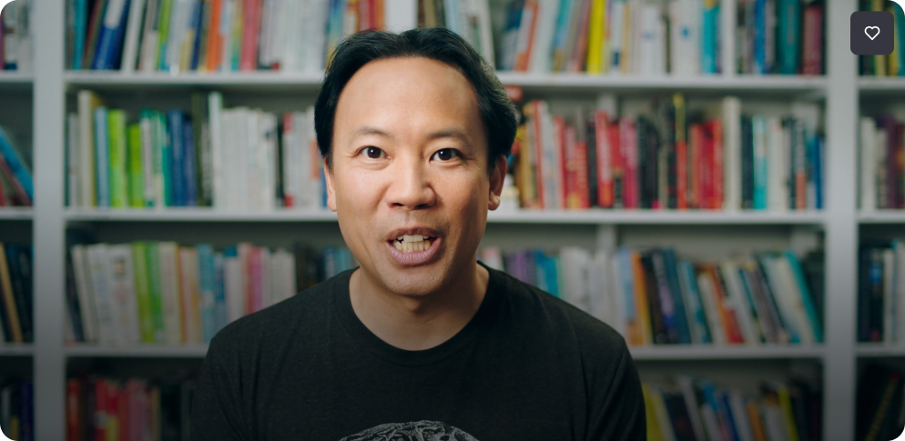

9:41 Mon Jun 6100% 🔋

Tap to play (prototype)
9:41 Mon Jun 6100% 🔋
learned!
Did you try it?
9:41 Mon Jun 6100% 🔋
In your opinion
Was the exercise helpful?
9:41 Mon Jun 6100% 🔋
This is optional
Do you want to tell why?
9:41 Mon Jun 6100% 🔋
+1 
Thanks for sharing
things better for you.